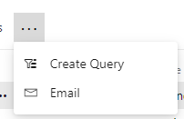

Azure DevOps Boards'da bir sorgu oluşturarak belirli bir takım veya kullanıcıya e-posta göndermek için aşağıdaki adımları izleyebilirsiniz:
- Azure DevOps Boards'a giriş yapın ve ilgili projeyi seçin.
- Sol gezinti çubuğunda "Boards" veya "Work" bölümüne gidin.
- Üst gezinti çubuğunda "Queries" sekmesini seçin.
- Mevcut sorgulardan birini seçerek düzenlemek veya yeni bir sorgu oluşturmak için "New query" veya benzer bir butonu tıklayın.
- Sorgu oluşturma ekranında, filtreleme ve sıralama seçeneklerini kullanarak istediğiniz sorguyu oluşturun. Örneğin, belirli bir ekip üyesine atanmış açık iş öğelerini filtrelemek için "Assigned To" filtresini kullanabilirsiniz.
- Sorgunuzun adını ve açıklamasını girin ve gerektiğinde diğer ayarları yapılandırın.
- Sorguyu kaydetmek için "Save query" veya benzer bir butonu tıklayın.
- Sorgunuz, "Queries" bölümünde görünecektir. Sorgunuzu seçin ve altındaki iş öğelerini listeleyen bir görünüm açılacaktır.
- E-posta göndermek için, sorgunuzun üstündeki "Export" veya "Share" seçeneklerini kontrol edin. Bu seçenekler genellikle bir rapor veya CSV dosyası oluşturma veya paylaşma seçeneklerini içerir.
- E-posta göndermek istediğiniz takım veya kullanıcılara, oluşturduğunuz raporu veya CSV dosyasını e-posta yoluyla gönderebilirsiniz. Bunun için kendi e-posta istemcinizi veya Azure DevOps Boards'daki "Share" veya "Export" seçeneklerini kullanabilirsiniz.
Bu şekilde, oluşturduğunuz sorgu ile belirli bir takım veya kullanıcıya ait iş öğelerini filtreleyebilir ve bu bilgileri e-posta yoluyla paylaşabilirsiniz.
